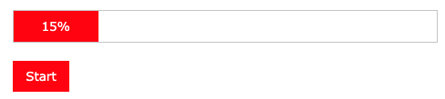

Create progress bar with these features:
- Initial Value: Initial value should be 0
- Start: Starts progress bar till 100
- End: When progress finishes change color to green
- Label: During progress show % label.
- Duration: it should finish in 1 second

Follow Up Questions:
- Explain how would you do:
- Animation using css?
- If you have 5 progress bar and each one should start when prev finishes.
- How can you know when all finished: if you have 5 progress bar and all start at a same time & might finish in different times.